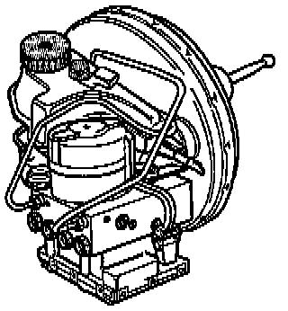

Teves 20 GI With ABS/EDL
ABS/EDL, Teves 20 GI, Distinguishing Features

- 10 inch brake servo.
- 10-valve dome (the protective sleeves for the valves will be visible when the ABS control module is separated from the ABS hydraulic unit).
- Longer valve block for ABS/EDL than for ABS alone.
Function
The 25-pin ABS control module J104 and the hydraulic unit make up a compact assembly, located on the left side of the engine compartment. The ABS control module is equipped with Diagnostic Trouble Code (DTC) memory and On Board Diagnostic (OBD) capability. The 16-pin Data Link Connector (DLC) is located behind a cover near to the ashtray.
"On Board Diagnostic (OBD)" refers to the electrical and electronic parts of ABS and ABS/EDL; in other words, only malfunctions related to the electrical connections to the control module are recognized (e.g. inlet or outlet valve open circuit).
The control module recognizes malfunctions during ABS or ABS/EDL operation and stores them in permanent memory, the contents of which can be recalled years later even if battery power has been disconnected.
Isolated malfunctions that occur sporadically are also recognized and stored but, in contrast to other systems with OBD capability, these are stored without the addendum "SP" (sporadic) in the scan tool display.
After switching the ignition on, the ABS warning light K47 and/or the warning light for brake system K118 light up for approx. 2 seconds. During this period a self-test sequence is carried out by the control module to check the following functions:
- Battery positive voltage (B+) supply is checked; must be at least 10.0 volts.
- The ABS control module, including valve windings, is checked.
- An ABS wheel speed sensor (electrical) test is carried out; fully completed at 20 km/h (approx. 12 mph).
- ABS control module coding is checked.
The (OBD) program must be initiated at the start of the troubleshooting process by checking for stored malfunction information using the VAG 1551 scan tool.
VAG 1551 Or Equivalent, Scan Tool
The DTC information displayed by the scan tool is used in conjunction with a DTC table, which lists possible causes of the malfunction and suggested repairs.
With the Teves 20 GI system, the OBD program has been complemented by the following functions:
- Read Measured Value Block.
- Code Control Module.
- Basic Setting.
- Output Diagnostic Test Mode.
Technical Data
When checking DTC memory, control module identification will be displayed on the VAG 1551 scan tool.
Example:
- 3A0 907 379 B ABS
- 3A0 907 379 C ABS/EDL
Diagnostic Trouble Code (DTC) Memory
Permanent memory (DTC memory); contents remain stored even without battery positive voltage (B+) supply. Access to data by "Rapid data transfer" operating mode 1.